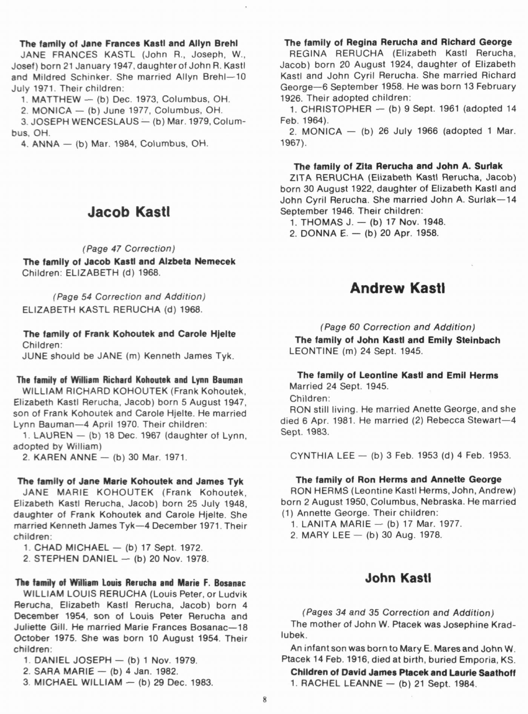

The book · Supplementary Section (1986)
Supplement page 8 The family of Jane Frances Kastl and Allyn Brehl


Transcription
The family of Jane Frances Kastl and Allyn Brehl
JANE FRANCES KASTL (John R., Joseph, W., Josef) born 21 January 1947, daughter of John R. Kastl and Mildred Schinker. She married Allyn Brehl—10 July 1971. Their children:
- MATTHEW — (b) Dec. 1973, Columbus, OH.
- MONICA — (b) June 1977, Columbus, OH.
- JOSEPH WENCESLAUS — (b) Mar. 1979, Columbus, OH.
- ANNA — (b) Mar. 1984, Columbus, OH.
Jacob Kastl
(Page 47 Correction)
The family of Jacob Kastl and Alzbeta Nemecek
Children: ELIZABETH (d) 1968.
(Page 54 Correction and Addition)
ELIZABETH KASTL RERUCHA (d) 1968.
The family of Frank Kohoutek and Carole Hjelte
Children:
JUNE should be JANE (m) Kenneth James Tyk.
The family of William Richard Kohoutek and Lynn Bauman
WILLIAM RICHARD KOHOUTEK (Frank Kohoutek, Elizabeth Kastl Rerucha, Jacob) born 5 August 1947, son of Frank Kohoutek and Carole Hjelte. He married Lynn Bauman—4 April 1970. Their children:
- LAUREN — (b) 18 Dec. 1967 (daughter of Lynn, adopted by William)
- KAREN ANNE — (b) 30 Mar. 1971.
The family of Jane Marie Kohoutek and James Tyk
JANE MARIE KOHOUTEK (Frank Kohoutek, Elizabeth Kastl Rerucha, Jacob) born 25 July 1948, daughter of Frank Kohoutek and Carole Hjelte. She married Kenneth James Tyk—4 December 1971. Their children:
- CHAD MICHAEL — (b) 17 Sept. 1972.
- STEPHEN DANIEL — (b) 20 Nov. 1978.
The family of William Louis Rerucha and Marie F. Bosanac
WILLIAM LOUIS RERUCHA (Louis Peter, or Ludvik Rerucha, Elizabeth Kastl Rerucha, Jacob) born 4 December 1954, son of Louis Peter Rerucha and Juliette Gill. He married Marie Frances Bosanac—18 October 1975. She was born 10 August 1954. Their children:
- DANIEL JOSEPH — (b) 1 Nov. 1979.
- SARA MARIE — (b) 4 Jan. 1982.
- MICHAEL WILLIAM — (b) 29 Dec. 1983.
The family of Regina Rerucha and Richard George
REGINA RERUCHA (Elizabeth Kastl Rerucha, Jacob) born 20 August 1924, daughter of Elizabeth Kastl and John Cyril Rerucha. She married Richard George—6 September 1958. He was born 13 February 1926. Their adopted children:
- CHRISTOPHER — (b) 9 Sept. 1961 (adopted 14 Feb. 1964).
- MONICA — (b) 26 July 1966 (adopted 1 Mar. 1967).
The family of Zita Rerucha and John A. Surlak
ZITA RERUCHA (Elizabeth Kastl Rerucha, Jacob) born 30 August 1922, daughter of Elizabeth Kastl and John Cyril Rerucha. She married John A. Surlak—14 September 1946. Their children:
- THOMAS J. — (b) 17 Nov. 1948.
- DONNA E. — (b) 20 Apr. 1958.
Andrew Kastl
(Page 60 Correction and Addition)
The family of John Kastl and Emily Steinbach
LEONTINE (m) 24 Sept. 1945.
The family of Leontine Kastl and Emil Herms
Married 24 Sept. 1945.
Children:
RON still living. He married Anette George, and she died 6 Apr. 1981. He married (2) Rebecca Stewart—4 Sept. 1983.
CYNTHIA LEE — (b) 3 Feb. 1953 (d) 4 Feb. 1953.
The family of Ron Herms and Annette George
RON HERMS (Leontine Kastl Herms, John, Andrew) born 2 August 1950, Columbus, Nebraska. He married (1) Annette George. Their children:
- LANITA MARIE — (b) 17 Mar. 1977.
- MARY LEE — (b) 30 Aug. 1978.
John Kastl
(Pages 34 and 35 Correction and Addition)
The mother of John W. Ptacek was Josephine Kradlubek.
An infant son was born to Mary E. Mares and John W. Ptacek 14 Feb. 1916, died at birth, buried Emporia, KS.
Children of David James Ptacek and Laurie Saathoff
- RACHEL LEANNE — (b) 21 Sept. 1984.
People from the line of descent on this page
- Leontine Kastl b. 1926
- Ron Herms 1950–1980
- Cynthia Lee Herms 1953–1953
- Annette George d. 1981
- Lanita Marie Herms b. 1977
- Mary Lee Herms b. 1978
- Elizabeth Kastl 1891–1965/1968
- Louis Peter Rerucha 1913–1981
- Regina Rerucha b. 1924
- Zita Rerucha b. 1922
- William Richard Kohoutek b. 1947
- Jane Marie Kohoutek b. 1948
- Lauren Kohoutek b. 1967
- Karen Anne Kohoutek b. 1971
- Kenneth James Tyk
- Chad Michael Tyk b. 1972
- Stephen Daniel Tyk b. 1978
- William Louis Rerucha b. 1954
- Marie Frances Bosanac b. 1954
- Daniel Joseph Rerucha b. 1979
- Sara Marie Rerucha b. 1982
- Michael William Rerucha b. 1983
- Richard George b. 1926
- Christopher George b. 1961
- Monica George b. 1966
- Thomas J. Surlak b. 1948
- Donna E. Surlak b. 1958
- Mary Elizabeth Mares 1888–1963
- John W. Ptacek 1890–1965
- Laurie Jane Saathoff
- Rachel Leanne Ptacek b. 1984
- Jane Frances Kastl b. 1945/1947
- Matthew Brehl b. 1973
- Monica Brehl b. 1977
- Joseph Wenceslaus Brehl b. 1979
- Anna Brehl b. 1984
Transcriber’s notes
Supplement page 8. Starts with a new family heading (Jane Frances Kastl / Allyn Brehl), whose parent family appears on the previous page. Corrections for Jacob Kastl (book pp. 47, 54), Andrew Kastl (p. 60) and John Kastl (pp. 34 and 35). Printed as-is: 'Joseph, W.,' (stray comma) in Jane Frances Kastl's lineage; heading 'Jane Marie Kohoutek and James Tyk' vs text 'Kenneth James Tyk'; 'Anette George' in Leontine Kastl entry vs 'Annette George' elsewhere. 'Krad-lubek' is hyphenated at a line break and joined as 'Kradlubek'.